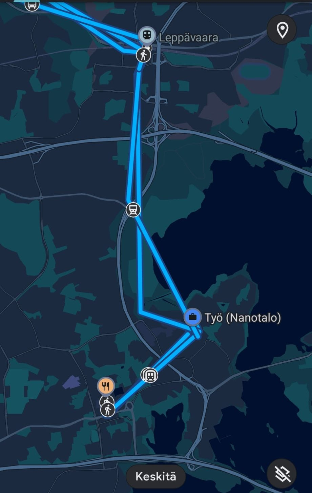

# Donated Data Jarno Rantaharju - May 22, 2025 --- ## Data Collection - There are many issues regarding personal data. Such as - how do we get more of it? --- ## Data Collection - The image of the polar watch - Takes time, expensive - Requires effort from participants - The data is only collected after the study starts. - Affects subject's behavior --- ## Data Already Exists <div style="display: flex;"> <div style="flex: 1; padding-right: 20px;"> <ul> <li>Thanks to GDPR and similar regulations, we have access to a throve of data</li> </ul> </div> <div style="flex: 1;">  </div> </div> --- ## Data Already Exists <div style="display: flex;"> <div style="flex: 1; padding-right: 20px;"> <ul> <li>The data is collected anyway, we just need to ask for it</li> <li>Reduces the burden on the subject</li> <li>Authentic behavior</li> </ul> </div> <div style="flex: 1;"> </div> </div> --- ## Real World Applications - Binge-Watching Netflix? Insights From Data Donations - https://doi.org/10.17645/mac.9362 - Using [PORT software](https://github.com/eyra/port) - Binge watching is not as common as the hype suggested --- ## Real World Applications - Instagram Use Among Adolescents - https://doi.org/10.1080/19312458.2022.2109608 - TikTok User Behavior Analysis - https://ar5iv.labs.arxiv.org/html/2301.04945 --- ## Real World Applications - More accurate picture than self-reports or scraping --- ## Demonstration - Let's take a look at the [Google Takeout](https://takeout.google.com/) page --- ## Demonstration - [Participant support extension](https://chromewebstore.google.com/detail/google-takeout-helper/khopbdleacpmohfcjpmkilmnfhnaooik) - Unlisted but public with this link - Study page - [Example Django page](https://github.com/digitraceslab/google_takeout_export) - Provides `api/takeout_items/` --- ## Demonstration - Requesting data - Downloading and uploading - Move to Jupyter - (see location_to_map.ipynb in the repository) - Load location data using Niimpy, inspect - Plot a route on a map - Showcase social signature --- ## Data processing - Server side processing: - The subject uploads the full data file - We reduce the data on the server and pseudonymize - The reduced data is copied to the researchers - Other options: - Client side processing: [PORT software](https://github.com/eyra/port) - Requires a more from the subject - Improves privacy, no third party data processor --- ## Privacy - This is personal data - Pseudonymized, but often easily identifiable --- ## Questions